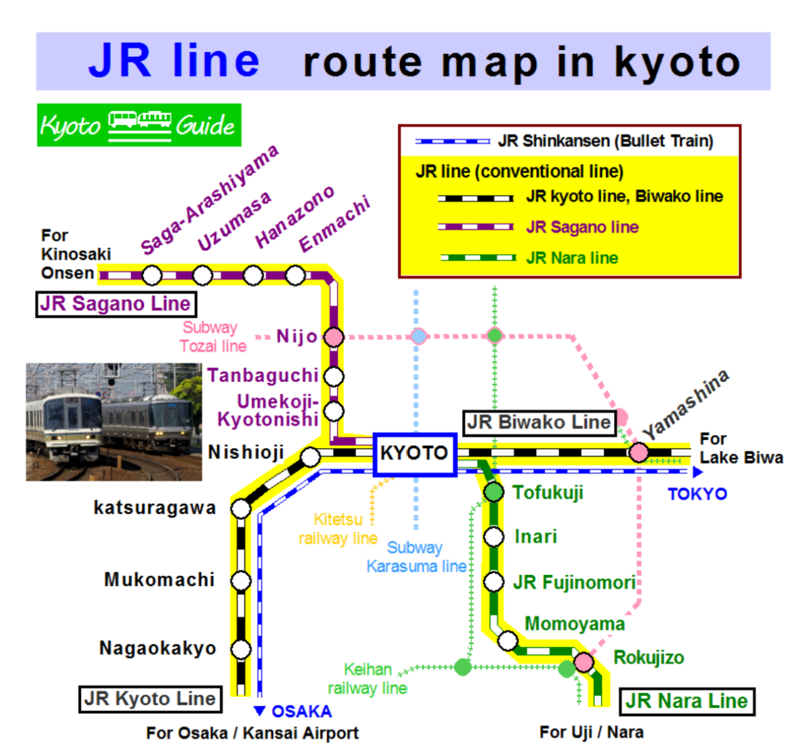

JR Lines:
There are 2 kinds of JR line in Kyoto, one is the Shinkansen (bullet train) operated by JR Central, and the other is conventional trains operated by JR West.The JR line in Kyoto has 4 different named lines, Sagano line, Nara line, JR Kyoto lien and Biwako line.
Those lines spred out to the north, south, east and west from kyoto station where the Shinkansen also stops.
The map below is the route of the JR line in Kyoto.
